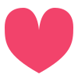
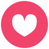
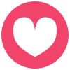

Final round — one decision left
Locked so far: W4 (Satoshi Bold wordmark). Below: the heart-dot refined two ways, and the favicon finalists — with the OurDream collision shown honestly. Answer like: "heart-dot small + disc B".
The wordmark — pick the dot
ARefined heart dot (smaller than round 2) recommended
The heart shrunk to true dot scale — a detail you discover, not a sticker. Reads as a plain dot from across the room, rewards a second look.

BPlain rose dot
Zero tricks. If you want the wordmark completely quiet and let the favicon carry the heart, this is the move.
The favicon — the OurDream problem, solved
—Why the bare heart is out
Their tab icon vs what ours would have been — same glyph, different shade. Too close.
ourdream.ai
theirs — bare gradient heart

drt.fmF4 — eliminated (same mark)
ours — heart as negative space
F1The Disc — three ring weights recommended: B
Same idea, three proportions. A = thick ring (sturdiest at 16px), B = balanced, C = big heart (warmest, thinnest ring).
A — thick ring

B — balanced
C — big heart

F5The d — dot in the bowl (heartless alternate)
Your "d" holding the rose dot — same DNA as the wordmark, no heart at all, zero collision risk with anyone.

drt.fm — Alexis
F6The Wave (heartless alternate)
Three sound bars — the ".fm" identity, animatable while she speaks. No heart, pure audio.
drt.fm — Alexis
My verdict: wordmark A (small heart dot) + favicon F1-B (balanced disc). The pair shares one heart geometry; the disc keeps OurDream's warmth without wearing their badge; and at 16px the disc reads as a solid coin where their bare heart smears. If you'd rather have zero hearts anywhere, F5 (d + dot) is the strongest heartless system.